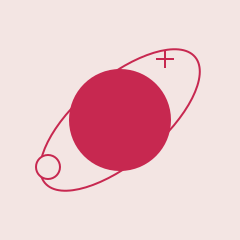

YOUR EVERYDAY COLLECTION
오늘의 발견
VOL. 01

PICK YOUR NEXT CHAPTER
지금, 나를 위한 도구
아직 발견하지 못했네요.
다른 검색어를 쓰거나 분류를 바꿔 보세요.

A LITTLE, EVERY DAY
대단한 시작보다,
계속되는 작은 순간.
한마디를 익히고, 하루를 돌아보고.
배움마루는 일상에 놓아두는 작은 배움의 서랍이에요.
YOUR EVERYDAY COLLECTION
PICK YOUR NEXT CHAPTER
아직 발견하지 못했네요.
다른 검색어를 쓰거나 분류를 바꿔 보세요.

A LITTLE, EVERY DAY
한마디를 익히고, 하루를 돌아보고.
배움마루는 일상에 놓아두는 작은 배움의 서랍이에요.